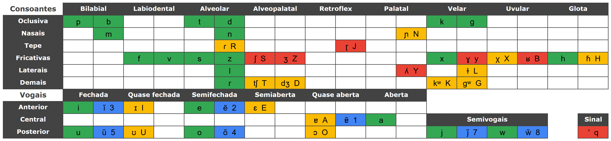

Digite símbolos fonéticos do português brasileiro
Para digitar o símbolo desejado use o carácter ao lado do símbolo.
(verde: são diretos, amarelos: são intuitivos, azul: são números e vermelho demandam atenção)
